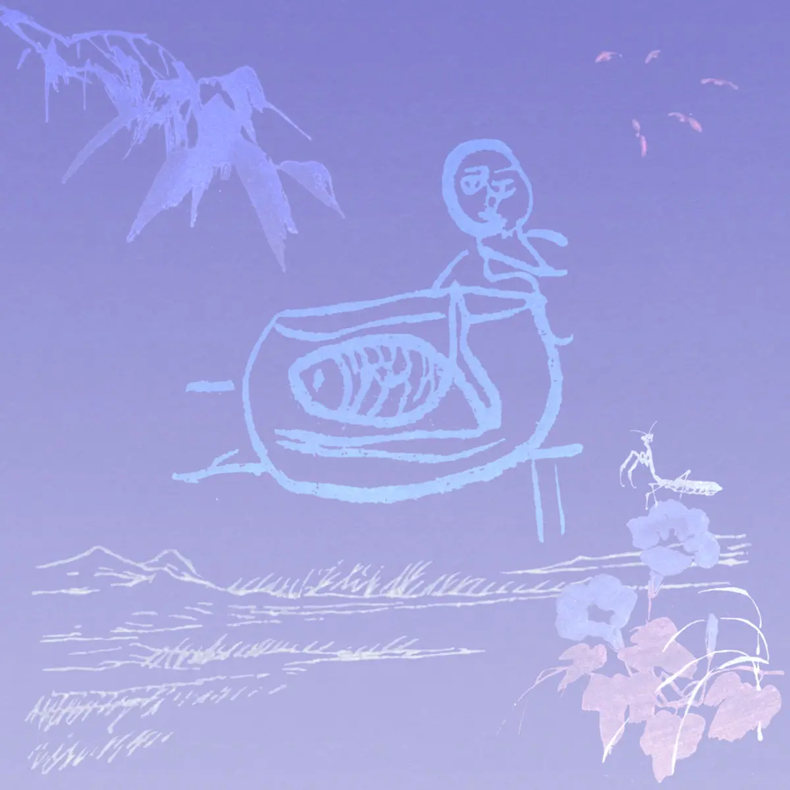

Album#24
无尽的夏天
{kind=link}

在一个看得见「月」亮的晚上，跳入河里「潜泳」，一直往下游， 你会进入到海底，走过「水母街道」，循着「Gymnopédies」的声音， 经过一个「美丽的聚会」，之后你会看到很多「珊瑚」，继续往前走，最终你会去到「喵喵岛☆.。.:*·°」，岛上有许多可爱的猫猫，四处逛逛，找到长满「小蘑菇」的地方，在那里，有一个「无尽的夏天」。
我不知道乐队是如何构思这张专辑的，基于歌名，我把它想像成了一段音乐旅程。整张专辑是相对安静的，里面用到的乐器1很丰富，要分类的话应该属于独立/另类音乐，也有点爵士即兴的感觉。
专辑封面能看到一只鱼塞满了鱼缸、一个站在鱼缸边上的人、山、风吹过的草地、螳螂、烟花、牵牛花(?)，还有左上角我不了解的植物，蓝紫色的背景给人夜晚的感觉。
专辑的所有曲目，除了「无尽的夏天」都是现场演奏和同期录制，「无尽的夏天」则是由成员小津拼贴 2022 到 2025 的片段组成。
戴上耳机，进入一段旅途吧，进行一次「潜泳」，找到那个「无尽的夏天」，祝你旅途愉快 :)
「月/潜泳」
这两首是连在一起的，「月」里有持续的提琴声、风声，营造一种夜的感觉，持续的提琴声或是在模拟河流。伴着提琴声进入了「潜泳」，重复的低沉的合成器声，给人一种不断下沉的感觉。 越往下游，越来越多的乐器融入进来，像是身边出现了各样的景色。
「水母街道」
贝斯的节奏听起来就像是在四处游动的水母，来到了水母街道，四处走，也有各种各有的景色。
还是在哪
还是在吗
还是在意
宇宙终结
「Gymnopédie」
这是一首融合了 Gymnopédie 旋律的曲子，Gymnopédie 本身我也很喜欢，这首改编也不错。
关于「Gymnopédie」
Gymnopédie（裸体歌舞）是法国作曲家兼钢琴家埃里克·萨蒂（Erik Satie）创作的钢琴曲。
「gymnopédies」指的是斯巴达年轻舞者赤裸表演的一种舞蹈，或者从比喻意义上说，不带武器地跳舞。色诺芬在《希腊史》、柏拉图在《法律篇》以及普鲁塔克在《论音乐》中都提到了这种舞蹈。古希腊题材贯穿了萨蒂的整个作品生涯，从《玄秘曲》一直到《苏格拉底之死》。 根据让-乔尔·巴比尔（Jean-Joël Barbier）的说法，选择这个词可能是为了暗指与斯巴达文明相关联的禁欲主义和朴素感，这两个概念与埃里克·萨蒂的美学理念十分接近。此外，萨蒂的灵感还部分源于其诗人好友 J.P. 孔塔米纳·德·拉图尔（JP Contamine de Latour）的诗作，即《古风》（Antiques）的作者：
Oblique et coupant l'ombre un torrent éclatant 2
Ruisselait en flots d'or sur la dalle polie
Où les atomes d'ambre au feu se miroitant
Mêlaient leur sarabande à la gymnopédie
「美丽的聚会」
各位管豪们
在沉睡中谈论政治
认为宁静就是和平的人
和认为自由自在就是和平的人（身外）
都在说和平
无限
一旦放在一起的时候
就会有人说
Keep quite
静かね
安静——
或者反过来说
为什么
不活泼地歌颂自由呢
寻找着如此多彩的一天
即使没有表达、影像的东西
短暂地
美丽相聚
宁静是不是沉默的同义词呢？
「珊瑚」
风拂过鸟鸣一般，
青绿色的帷帘与
石头呼吸的声音。
它们会一直新鲜吗？
「喵喵岛☆.。.:*·°」
轻快的节奏，还有可爱的「喵喵喵喵喵喵喵喵喵」☆.。.:*·°
「小蘑菇」
蘑菇和后面那种 8-bit 音效，会让我联想到马里奥里面的小蘑菇，感觉有一群小蘑菇在四处来回走着。
「无尽的夏天」
里面是很多的声音片段，看专辑介绍，应该是 2022 到 2025 之间的一些片段，像是在夏夜的海边「短暂地 美丽相聚」。
夏天之所以无尽，大概是夏天里充满了回忆吧，每次想起，仿佛就在昨天，「那个夏天」仿佛从来没有结束。